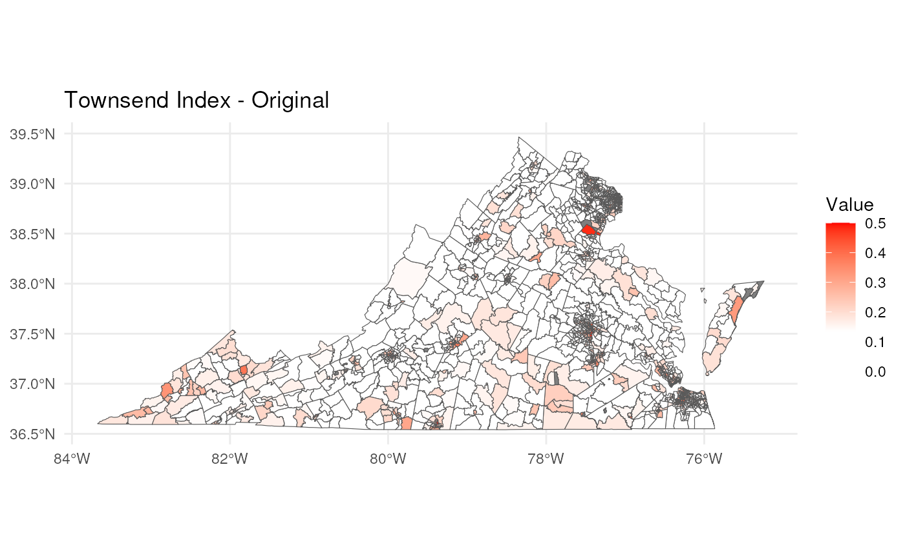

census10to20
census10to20.Rmd
library(sdc.census10to20)
library(dplyr)
#>
#> Attaching package: 'dplyr'
#> The following objects are masked from 'package:stats':
#>
#> filter, lag
#> The following objects are masked from 'package:base':
#>
#> intersect, setdiff, setequal, union
library(readr)
library(tigris)
#> To enable caching of data, set `options(tigris_use_cache = TRUE)`
#> in your R script or .Rprofile.load data
data(va_hdcttr_vdh_2017_2021_material_deprivation_index,
package = "sdc.census10to20"
)
data <- dfuse the standardize function
this function produces both standardized and original values (see the measure variable)
standardized_data <- standardize_all(data)
#> Warning in convert_2010_to_2020_bounds(temp): data contains missing or NULL values. the value of any new tract that
#> overlaps with a NULL value will be coerced to NULL.
#> If this is an issue, we recommend manual insertion of values based on
#> your contextual specifications.
#> Warning in convert_2010_to_2020_bounds(temp): data contains missing or NULL values. the value of any new tract that
#> overlaps with a NULL value will be coerced to NULL.
#> If this is an issue, we recommend manual insertion of values based on
#> your contextual specifications.
#> Warning in convert_2010_to_2020_bounds(temp): data contains missing or NULL values. the value of any new tract that
#> overlaps with a NULL value will be coerced to NULL.
#> If this is an issue, we recommend manual insertion of values based on
#> your contextual specifications.getting tract shape files for VA
virginia_tracts_2010 <- tracts(state = "51", year = 2010, cb = TRUE)
#> | | | 0% | |== | 3% | |=== | 4% | |==== | 6% | |===== | 7% | |======= | 10% | |========== | 14% | |=========== | 16% | |============ | 17% | |============== | 20% | |================ | 22% | |================= | 24% | |================== | 26% | |=================== | 28% | |===================== | 30% | |======================= | 33% | |======================== | 34% | |========================== | 37% | |============================ | 39% | |============================= | 42% | |=============================== | 45% | |================================== | 49% | |==================================== | 51% | |===================================== | 52% | |======================================= | 55% | |======================================== | 58% | |========================================== | 60% | |=========================================== | 62% | |============================================= | 64% | |=============================================== | 67% | |================================================ | 68% | |================================================== | 71% | |==================================================== | 75% | |===================================================== | 76% | |======================================================= | 79% | |========================================================= | 81% | |=========================================================== | 84% | |============================================================ | 86% | |============================================================= | 87% | |=============================================================== | 90% | |================================================================ | 91% | |================================================================== | 95% | |=================================================================== | 96% | |===================================================================== | 99% | |======================================================================| 100%
virginia_tracts_2020 <- tracts(state = "51", year = 2020, cb = TRUE)
#> | | | 0% | |= | 2% | |=== | 4% | |==== | 5% | |===== | 7% | |====== | 9% | |======= | 10% | |========= | 12% | |========= | 13% | |========== | 15% | |=========== | 16% | |============ | 18% | |============= | 19% | |============== | 20% | |=============== | 22% | |================= | 24% | |============================================== | 65% | |================================================= | 70% | |=================================================== | 73% | |===================================================== | 75% | |===================================================== | 76% | |======================================================= | 79% | |========================================================== | 83% | |=========================================================== | 85% | |============================================================ | 86% | |=============================================================== | 90% | |================================================================= | 93% | |================================================================== | 95% | |=================================================================== | 96% | |==================================================================== | 97% | |===================================================================== | 99% | |======================================================================| 100%
virginia_tracts_2010$geoid <- substring(virginia_tracts_2010$GEO_ID, 10)
virginia_tracts_2020$geoid <- virginia_tracts_2020$GEOIDmaking standaardized map
my_plot_std <- ggplot(data = standardized_data_std) +
geom_sf(aes(fill = value)) +
scale_fill_gradient2(
low = "white",
high = "red",
midpoint = median(standardized_data_std$value, na.rm = TRUE),
space = "Lab",
na.value = "grey50",
limits = c(0, 0.5)
) +
labs(title = 'Townsend Index - Standardized', fill = "Value") +
theme_minimal()
# ggsave(
# "standardized.png",
# plot = my_plot,
# width = 10,
# height = 8,
# dpi = 300
# )making original map
my_plot_org <- ggplot(data = standardized_data_org) +
geom_sf(aes(fill = value)) +
scale_fill_gradient2(
low = "white",
high = "red",
midpoint = median(standardized_data_org$value, na.rm = TRUE),
space = "Lab",
na.value = "grey50",
limits = c(0, 0.5)
) +
labs(title = 'Townsend Index - Original', fill = "Value") +
theme_minimal()
# ggsave(
# "original.png",
# plot = my_plot,
# width = 10,
# height = 8,
# dpi = 300
# )
plot(my_plot_org)